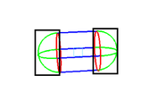
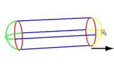
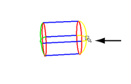
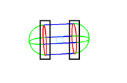
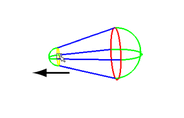
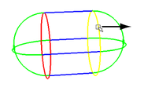
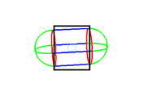
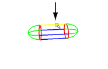
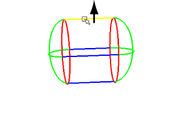

使用交互式绑定绑定蒙皮后，可在视口中以交互方式或通过调整“通道盒”(Channel Box)或“属性编辑器”(Attribute Editor)中的参数，来调整体积操纵器。
查看和选择交互式绑定操纵器
- 打开“交互式蒙皮绑定工具”(Interactive Skin Binding Tool)。（从主菜单栏中选择“蒙皮 > 编辑平滑蒙皮 > 交互式蒙皮绑定工具”(Skin > Edit Smooth Skin > Interactive Skin Bind Tool)，或双击 Maya“工具箱”(Tool Box)中的
 。）
。） - 单击以在视口中选择一个影响，或从“交互式蒙皮绑定工具”(Interactive Skin Binding Tool)中的“影响”(Influences)列表中进行选择。
此时，体积操纵器会显示在视口中的影响周围。默认情况下，体积操纵器一次只在一个活动的影响上显示，但可以设定其他“显示”(Display)选项。
例如，要显示操纵器（即使未选中其关联的关节），可以将“显示”(Display)选项设定为“全部”(All)。启用该选项后，所有非活动操纵器均显示为线框，并且可以使用行进式拾取热键在操纵器之间切换。
调整交互式绑定操纵器
要在视口中调整操纵器，拖动并按  键拖动操纵器的边以更改其形状和大小。还可以使用操纵器平移和旋转控件来调整操纵器的位置。
键拖动操纵器的边以更改其形状和大小。还可以使用操纵器平移和旋转控件来调整操纵器的位置。
下表总结了可以操纵体积的方法。（这些说明假定使用默认的胶囊体积类型。）
操纵区域时，所影响的区域会亮显为黄色。
| 区域 | 拖动 | 按 Shift 键并拖动 |
|---|---|---|
|

绿色（提示） |

缩短或拉长整个胶囊。 |

展平胶囊提示。 |
|

红色（端点） |

向左拖动可收缩一端。 向右拖动可展开。 |

均匀展开或收缩两端。 |
|

蓝色（中间） |

均匀收缩或展开高度和宽度。 |

非均匀收缩或展开顶部、底部和侧面。 |
注：
上面的图像不显示操纵器旋转和移动控件。要在场景中收缩旋转环和移动箭头，请使用 + 和 - 热键。
调整操纵器使其包括或排除顶点时，Maya 会实时更新权重颜色反馈以获取关联的影响。
提示：
可以调整“衰减曲线”(Falloff curve)或在“交互式蒙皮绑定工具”(Interactive Skin Binding Tool)的“蒙皮绑定设置”(Skin Binding Settings)中选择不同的颜色渐变预设。